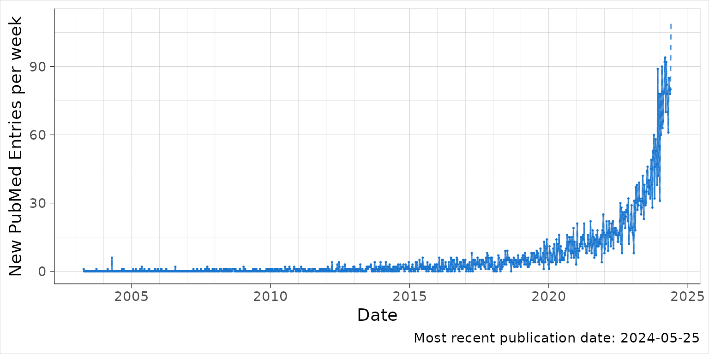

MR publications over time
mr.Rmd
library(PubmedPlot)
#>
#> Attaching package: 'PubmedPlot'
#> The following object is masked from 'package:base':
#>
#> search
library(ggplot2)
#> Error in get(paste0(generic, ".", class), envir = get_method_env()) :
#> object 'type_sum.accel' not found
library(dplyr)
#>
#> Attaching package: 'dplyr'
#> The following objects are masked from 'package:stats':
#>
#> filter, lag
#> The following objects are masked from 'package:base':
#>
#> intersect, setdiff, setequal, union
a <- PubmedPlot::search('"Mendelian randomisation" [Title] OR "Mendelian randomization" [Title]')
res <- a$res
cap_verb="Data from PubMed search for Mendelian randomi[s/z]ation, title only. "
xlab="Date"
ylab_root="New PubMed Entries"
mycol="dodgerblue3"
lwidth=.4
theme_mrlit<-function(...){
theme_classic(base_size=14)%+replace%
theme(legend.position="bottom",
strip.background=element_rect(colour='grey99',fill='grey98'),
panel.grid.major=element_line(linewidth=lwidth/3,colour='grey'),
panel.grid.minor=element_line(linewidth=lwidth/5,colour='grey'),
plot.background=element_rect(fill=NA,linewidth=lwidth/2,colour='grey'),
panel.border=element_rect(fill=NA,linewidth=lwidth/2,colour='grey'),
axis.line=element_line(linewidth=.2),
axis.ticks=element_line(linewidth=.2))
}
## plot ####
p=ggplot(res|>
filter(time_level == "Weeks" & pubmed_date!=max(pubmed_date,na.rm=F)),aes(pubmed_date,n_publications))+
# geom_smooth(se=F,colour='black')+
geom_point(size=.25,colour=mycol,alpha=1)+
geom_line(alpha=.75,colour=mycol)+
geom_line(data=res %>% filter(time_level == "Weeks"),linetype=2,alpha=.75,colour=mycol)+
scale_x_date(date_minor_breaks="1 year") +
labs(x="Date",
y=paste(ylab_root,"per week"),
caption=paste("Most recent publication date:", max(subset(res, time_level=="Weeks")$pubmed_date)),
x="Date") +
theme_mrlit()
p